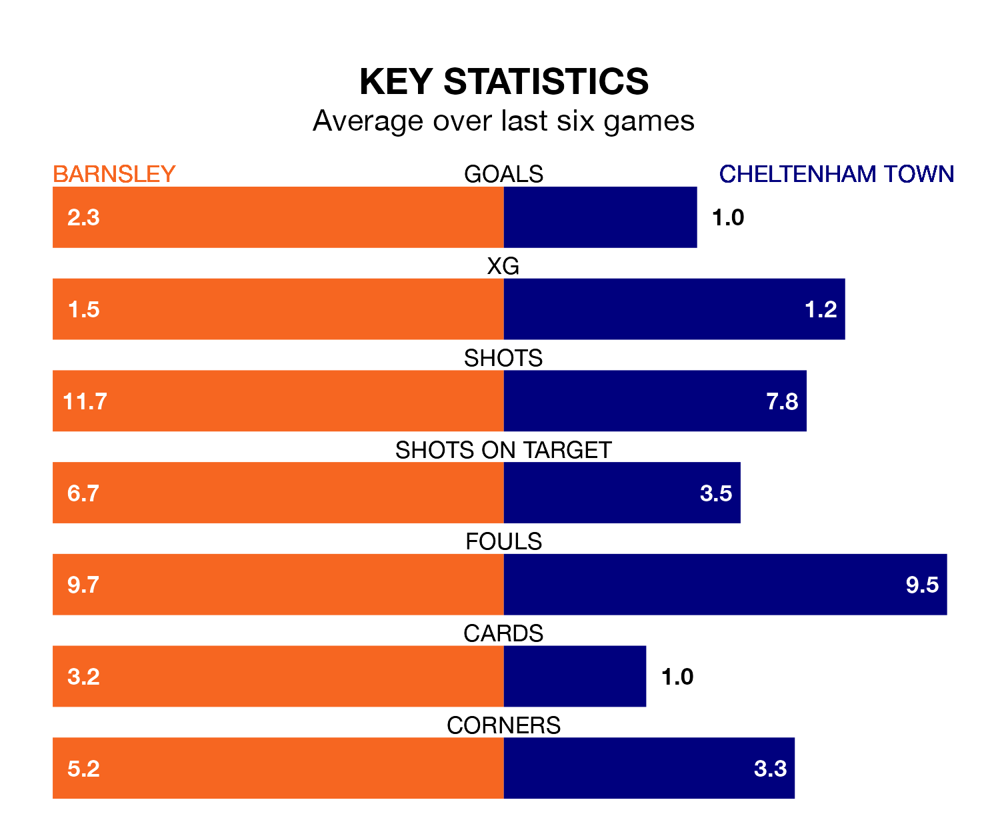

Cheltenham Town travel to Oakwell looking to secure a first win in six EFL League One games against Barnsley on Saturday.
The Robins have lost three and drawn two matches since they last earned three points – against Port Vale on February 17.
They face a Barnsley side who have won three and drawn one over that time.
With 70 goals in 37 games so far this season, Barnsley are the league's third-highest scorers with 1.9 goals per game. And they are conceding at an average rate, letting in 48 goals at a rate of 1.3 per game.
Cheltenham, meanwhile, are below average scorers, with 0.8 goals per game, compared to a league average of 1.3. They have conceded 1.4 goals per game.
In Devante Cole, the Tykes have one of the league's sharpest shooters so far this season. He has notched 17 goals in 37 appearances, to sit second in the scoring charts.
His goal rate of one every 178 minutes is quicker than that of Liam Sercombe, Town's top scorer with a goal every 328 minutes, and a total of eight goals in 36 games.
The Robins are 21st in the table after 36 games, of which they have won nine and drawn seven, earning 34 points.
The home side are 16 places ahead of the visitors in fifth, with 20 wins and 10 draws putting them on 70 points.
In the last three years, Barnsley and Cheltenham have played each other on three occasions. Barnsley won all of them.
Their last meeting was on September 2, when Barnsley won 2-0 away.
Barnsley's last match was on Tuesday, a 3-2 win against Carlisle United, with John Mcatee, Jonathan Russell and Jordan Williams getting the goals for the Tykes.
Cheltenham lost 2-1 against Oxford United last time out, on March 9, with Will Ferry on the scoresheet.
Saturday's match will be refereed by Daniel Middleton, who has taken charge of eight EFL League One games so far this season, issuing three red cards and booking 27 players. He has awarded two penalties.
He is yet to oversee a match featuring either Barnsley or Cheltenham this season.
Updated: 15:10 (UTC), 15/03/24